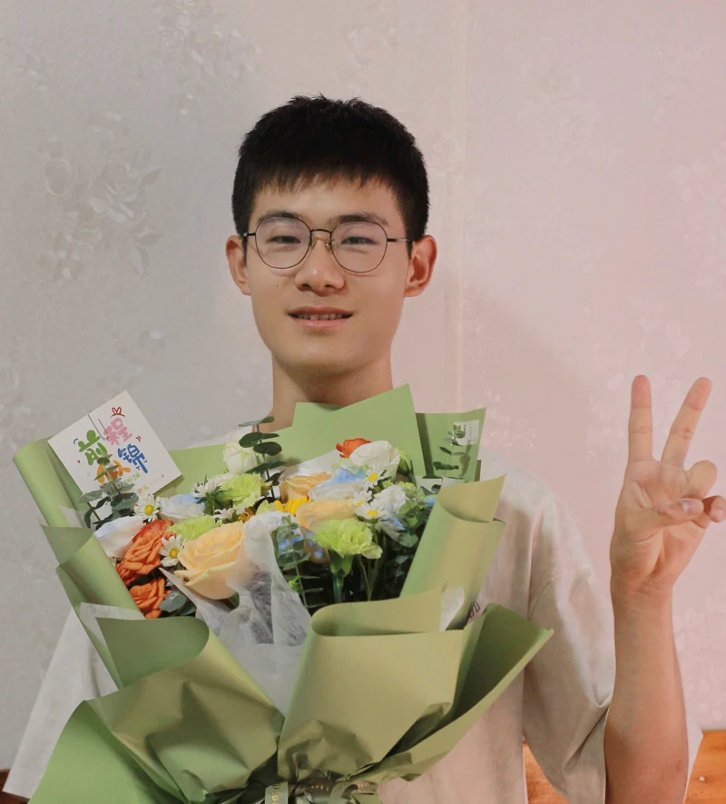
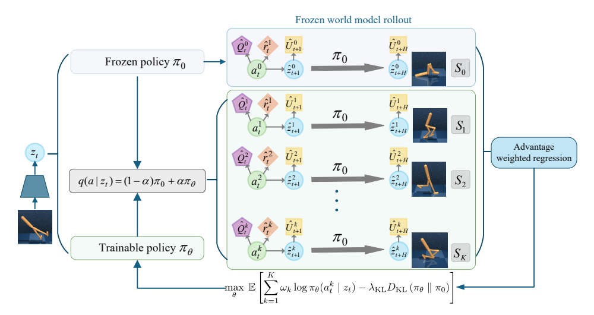
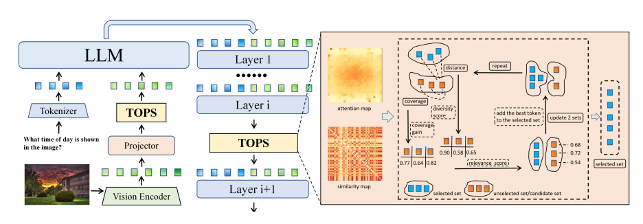
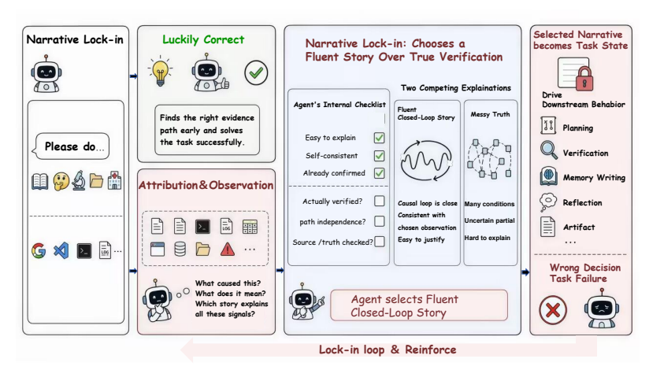

北京银河通用机器人
2026.08 — 至今后训练算法研究实习生 · 线下
指导教师：王鹤教授
研究具身模型后训练与 HIL-VLA 仿真基准接入，探索连接 VLA 微调、在线强化学习与闭环评测的 Real2Sim2Real 工作流。

你好，我是鲁铮（Zheng Lu），电子科技大学计算机科学与技术专业 2025 级本科生，就读于国家“珠峰计划”拔尖人才实验班。目前，我在北京银河通用机器人实习，在王鹤教授的指导下开展具身模型后训练算法研究。
我的研究兴趣包括具身智能、强化学习与世界模型。我致力于探索具身智能迈向通用智能的路径。如果你对我的研究感兴趣，或希望交流与合作，欢迎随时联系我。
Email: zheng_lu@std.uestc.edu.cn / 中文简历 / 英文简历 / OpenReview / 小红书 Google Scholar / GitHub
精选论文与研究稿件。更多信息见我的 Google Scholar。
* 共同贡献。† 项目负责人。‡ 通讯作者。
|
 |
强化学习 · CPR
Better Policies from Short Comparisons: Minimal Post-Training with Frozen World Models投往AAAI 2027 Comparative Policy Repair（CPR）在冻结的世界模型中比较短时程动作分支，并在 KL 约束下将相对优势蒸馏到策略中。无需额外环境交互，在 Atari 和 DMC 上取得 3.8%–5.2% 的总体提升，在 MT50 上将成功率提高 5.0 个百分点，额外计算量仅为原始训练的 0.1%–0.7%。 |
|
 |
多模态 · TOPS
TOPS: First-Principles Visual Token Pruning via Constructing Token Optimal Preservation Sets for Efficient MLLM Inference投稿至 EMNLP 2026 TOPS 是一种无需训练、与模型架构无关的视觉 token 剪枝方法，基于任务相关性、信息覆盖与语义多样性。在 7 个多模态模型骨干和 14 个基准上验证；删除 77.8% 的视觉 token 后，LLaVA-NeXT 7B 与 13B 分别保留原始性能的 100.0% 与 100.6%。 |
|
 |
智能体 · Let It Go
Let It Go: Narrative Lock-in in Open-ended Real-Life AI AgentsICML 2026 · FAGEN Workshop · Poster 研究长时程智能体的“叙事锁定”：早期错误判断固化为任务状态，即使出现反证也难以修正。我们在 8 类任务和 4 个模型中分析这一现象，并提出将执行与监督解耦的 Nexus 外部监督框架，以减少错误路径的持续累积并改善恢复能力。 |
后训练算法研究实习生 · 线下
指导教师：王鹤教授
研究具身模型后训练与 HIL-VLA 仿真基准接入，探索连接 VLA 微调、在线强化学习与闭环评测的 Real2Sim2Real 工作流。
研究助理 · 线下
研究冻结世界模型后的策略后训练，在不增加环境交互的情况下提升策略性能，形成 Comparative Policy Repair（CPR）。
研究助理 · 远程
研究团队：仉尚航教授团队
研究无需训练的视觉 token 剪枝以提高多模态推理效率，参与 TOPS 方法研究。
研究助理 · 远程
研究团队：张林峰教授团队
研究长时程智能体可靠性与叙事锁定的外部监督，参与 Let It Go 与 Nexus 框架研究。
电子科技大学 AI 社 · 副社长
UESTC AI 社是西南地区规模最大的深度学习社团，我们汇聚了一群对人工智能充满热情的探索者。从计算机视觉、自然语言处理到前沿的大语言模型、智能体、世界模型、具身智能，我们共同探索 AI 技术的无限可能。我们成立的初衷，就是希望能为大家在选择未来方向、深入人工智能领域的道路上，提供最坚实的帮助与支持。欢迎加入 UESTC AI 社 QQ 群：602142028。